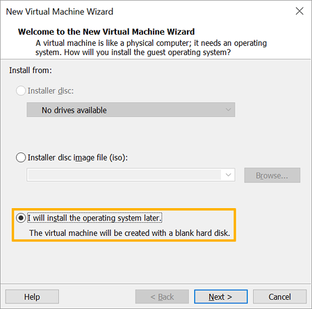
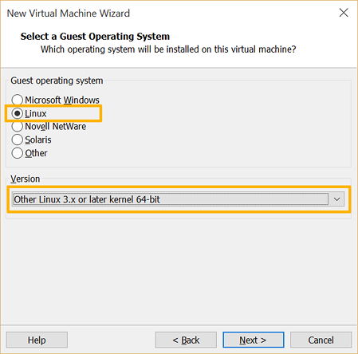
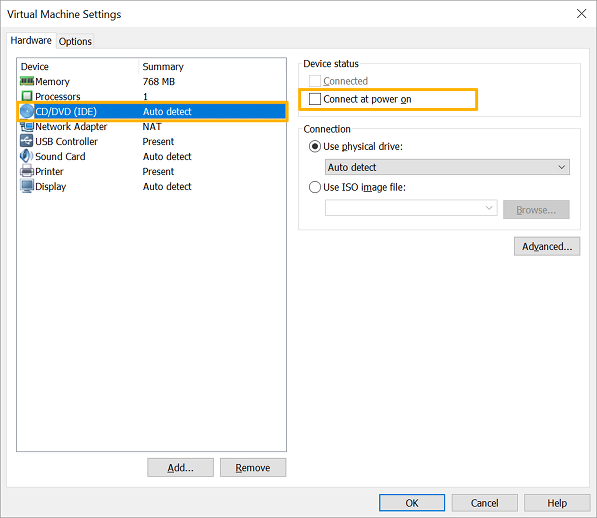
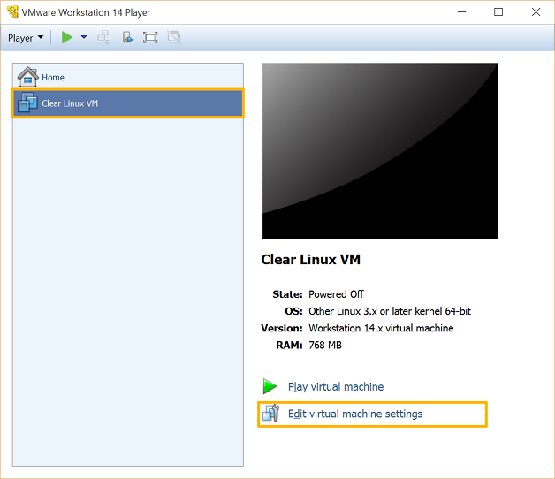
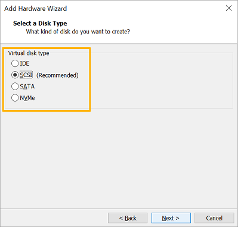
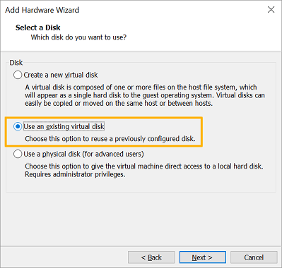
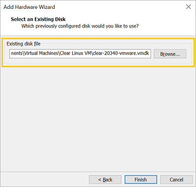

运行预配置的 Clear Linux* OS 映像，用作 VMware* Workstation Player 来宾操作系统
本页说明如何在 VMware Workstation 14 Player 上部署预配置的 Clear Linux OS VMware 映像。
概述
VMware Workstation 14 Player 是一个 2 类虚拟机管理程序。它在另一操作系统之上运行，如 Windows* 或 Linux*。利用 VMware ESXi，可以在本地系统上创建、配置、管理和运行 Clear Linux* OS VMs。
注解
本文截图采用了 Windows 版 VMware Workstation 14 Player。Linux 版本中的菜单和提示有微小的文字差异。
安装 VMware Workstation Player 虚拟机管理程序
在系统 BIOS 中启用 Intel® VT 和 Intel® VT-d。
VMware Workstation 14 Player 有 Windows 和 Linux 版本。下载您喜欢的版本。
根据您的操作系统，安装下述说明安装。
在支持的 Linux 操作系统上：
启用 GUI 桌面：
启动终端模拟器。
发出如下命令，按照指引步骤启动安装程序。
sudo sh ./VMware-Player-[version number].x86_64.bundle
在 Windows 上：
- 启动安装程序。
- 按照安装向导提示操作。
有关其他帮助，请查看 VMware Workstation Player Documentation。
下载最新的 Clear Linux OS VMware 映像
从 image 存储库中获取最新的 Clear Linux OS VMware 映像。查找 clear-[version number]-vmware.vmdk.xz。还可以使用以下命令：
curl -O https://cdn.download.clearlinux.org/image/$(curl https://cdn.download.clearlinux.org/image/latest-images | grep vmware)
访问 Clear Linux* OS image types，了解关于所有 Clear Linux OS 映像的其他信息。
确认 Clear Linux OS 映像的完整性。
使用下载的 Clear Linux OS 映像之前，请确认其完整性。本操作消除了由于下载问题导致的罕见映像损坏。为了方便验证，发布的每个 Clear Linux OS 映像均有一个相应的 SHA512 校验和文件，后缀为 -SHA512SUMS。
下载与您的 Clear Linux OS 映像 相应的 SHA512 校验和文件。
启动命令提示符。
转到下载映像和校验和文件所在的目录。
利用以下命令获取该映像的 SHA512 校验和：
CertUtil -hashfile ./clear-[version number]-[image type].[compression type] sha512
手动比较该结果与所下载校验和文件中所示的原始校验和值，确保它们相匹配。
解压缩 Clear Linux OS 映像
发布的 Clear Linux OS 映像以 GNU zip (.gz) 或 XZ (.xz) 格式压缩。压缩类型取决于目标平台或环境。要解压缩映像，应按照以下步骤操作：
下载并安装 7-Zip。
转到下载映像所在的目录，右键点击该映像。
从弹出菜单中选择 7-Zip，然后选择 解压缩到此处，如图 1 所示。

图 1：Windows 7-Zip 解压缩文件。
映像类型
表 1 列出了当前可用的独立于平台的映像。表 2 列出了当前可用的特定于平台的映像。
| 映像类型 | 描述 |
|---|---|
| live-desktop.img 或 live-desktop.iso | 用于引导启动至 GNOME* 桌面以便预览或安装操作系统的映像。 |
| live-server.img 或 live-server.iso | 用于引导启动至服务器命令提示符以便预览或安装操作系统的映像。 |
| 映像类型 | 描述 |
|---|---|
| aws.img | 适用于 Amazon* AWS* 的映像。 |
| azure.vhd | 用于 Microsoft* Azure* 云平台的虚拟硬盘。 |
| azure-docker.vhd | 用于 Microsoft Azure 云平台并预安装 Docker* 的虚拟硬盘。 |
| azure-machine-learning.vhd | 用于 Microsoft Azure 云平台并安装 machine-learning-basic bundle 的虚拟硬盘。 |
| cloudguest.img | 安装一般云来宾虚拟机 (VM) 必备组件的映像。 |
| gce.tar | 拥有 Google Compute Engine (GCE) 特定内核的映像。 |
| hyperv.vhdx | 适用于 Microsoft Hyper-V* 虚拟机管理程序的虚拟硬盘。包括 optimized kernel for Hyper-V。 |
| kvm.img | 可利用 start_qemu.sh 引导启动一个简单虚拟机的映像。包括用于虚拟机的 optimized kernel。 |
| kvm-legacy.img | 可利用 BIOS 引导启动一个简单虚拟机的映像，如果使用 start_qemu.sh，请确保删除 -bios 参数。 |
| pxe.tar | 适用于 PXE 服务器的映像。 |
| vmware.vmdk | 用于 VMware* 平台包括 Player、Workstation 和 ESXi 的虚拟机硬盘。 |
我们还提供了针对其他操作系统的说明。
创建并配置新虚拟机
启动 VMware Workstation Player 应用。
在主屏幕上，点击 创建新虚拟机。见图 1。

图 1：VMware Workstation 14 Player - 创建新虚拟机
在 欢迎使用“新建虚拟机”向导 屏幕上，选择 稍后安装操作系统 选项。见图 2。
图 2：VMware Workstation 14 Player - 选择稍后安装操作系统。
点击 下一步 按钮。
在 选择来宾操作系统 屏幕上，将 来宾操作系统 设置为 Linux。见图 3。
图 3：VMware Workstation 14 Player - 选择来宾操作系统类型
将 版本 设置为 其他 Linux 3.x 或更高版本内核 64 位。
点击 下一步 按钮。
在 虚拟机命名 屏幕上，为新虚拟机命名。见图 4。

图 4：VMware Workstation 14 Player - 虚拟机命名
点击 下一步 按钮。
在 指定磁盘容量 屏幕上，点击 下一步 按钮。默认磁盘设置保持不变。挂载预配置的 Clear Linux OS VMware 映像时，我们将移除默认虚拟磁盘，用预配置的磁盘来代替。见图 5。

图 5：VMware Workstation 14 Player - 设置磁盘容量
在 准备创建虚拟机 屏幕上，点击 定制硬件… 按钮。见图 6。

图 6：VMware Workstation 14 Player - 定制硬件
在 设备 列表中，选择 处理器。见图 7。

图 7：VMware Workstation 14 Player - 设置虚拟化引擎选项
在 虚拟化引擎 部分，选中 虚拟化英特尔 VT-x/EPT 或 AMD-V/RVI。
如果因不再需要而断开虚拟 CD/DVD (IDE)，请在 设备 列表中选择 新 CD/DVD (IDE)。见图 8。
图 8：VMware Workstation 14 Player - 断开 CD/DVD (IDE)
在 设备状态 部分，取消选中 开机时连接。
点击·关闭 按钮。
点击 完成 按钮。
{kind=link}
{kind=link}
{kind=link}
挂载预配置的 Clear Linux OS Vmware 映像
将下载和解压缩的预配置 Clear Linux OS VMware 映像文件
clear-[version number]-basic.vmdk移动至新建虚拟机所在的目录。注解
根据操作系统不同，通常可以在如下地址找到 VMware 虚拟机文件：
- Linux 操作系统：
/home/username/vmware - Windows：
C:UsersusernameDocumentsVirtual Machines
- Linux 操作系统：
在 VMware Workstation Player 主屏幕上，选择新创建的虚拟机。见图 9。
图 9: VMware Workstation 14 Player - 编辑虚拟机设置
点击 编辑虚拟机设置。
要移除默认硬盘，在 设备 列表中选择 硬盘 (SCSI)。见图 10.

图 10：VMware Workstation 14 Player - 移除硬盘
点击 移除 按钮。
要添加新硬盘并挂载预配置的 Clear Linux OS VMware 映像，点击 添加… 按钮。见图 11。

图 11：VMware Workstation 14 Player - 添加新硬盘
在 硬盘类型 部分，选择 硬盘。
点击 下一步 按钮。
选择您喜欢的 虚拟磁盘类型。见图 12。
图 12：VMware Workstation 14 Player - 选择虚拟磁盘类型
选择 使用现有的虚拟磁盘 选项。见图 13。
图 13：VMware Workstation 14 Player - 使用现有虚拟磁盘
点击 浏览 按钮，选择预配置的 Clear Linux OS VMware 映像文件。见图 14。
图 14：VMware Workstation 14 Player - 选择现成的 VMware Clear Linux OS 映像文件
点击 完成 按钮。
注解
要求将现有虚拟磁盘转换为较新的格式时，选择任何一个选项均可。
{kind=link}
{kind=link}
{kind=link}
{kind=link}
启用 UEFI 引导支持
Clear Linux OS needs UEFI support to boot. To enable it, add the
following line to the end of your VM’s .vmx file:
firmware = "efi"
注解
根据操作系统不同，通常可以在如下地址找到 VMware 虚拟机文件：
- Linux 操作系统：
/home/username/vmware - Windows：
C:\Users\username\Documents\Virtual Machines
开启虚拟机
配置上述设置后，开启 Clear Linux OS 虚拟机。
在 VMware Workstation Player 主屏幕上，选择虚拟机。见图 15。

图 15：VMware Workstation 14 Player - 开启虚拟机
点击 Play 虚拟机。